图说释迦牟尼佛一生
(全图)
这本《释迦牟尼故事》画册，是迄今为止世界上保存最完美、最完整的佛祖故事资料，数十幅形象亲切，色彩绚丽的故事画面，概括了释迦牟尼的生平事迹及他的一些基本思想。 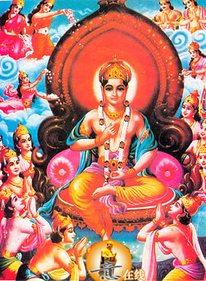 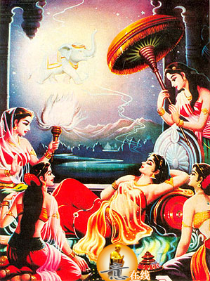 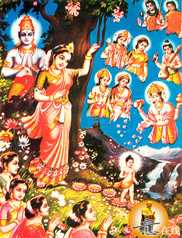 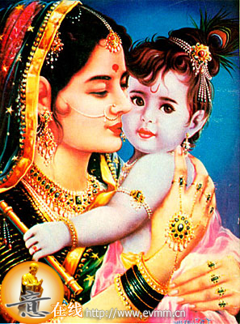 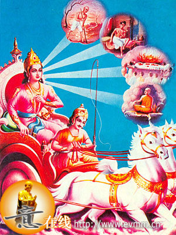 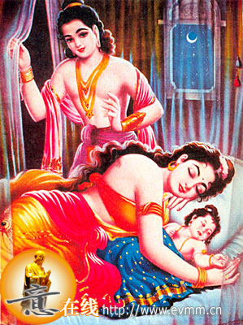 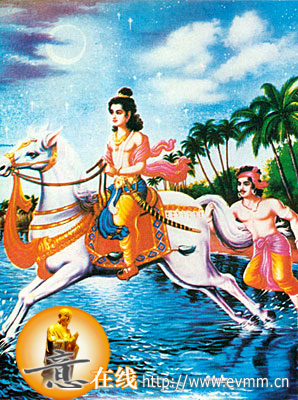 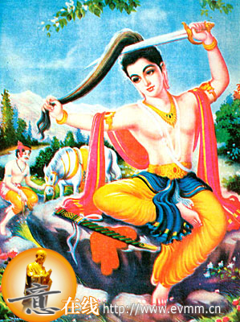 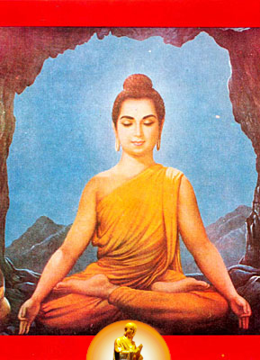 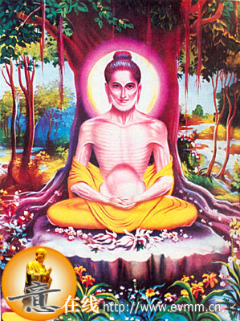 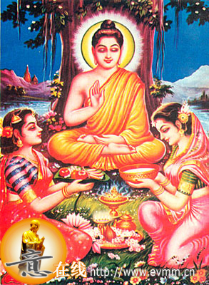 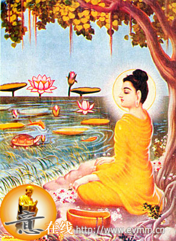 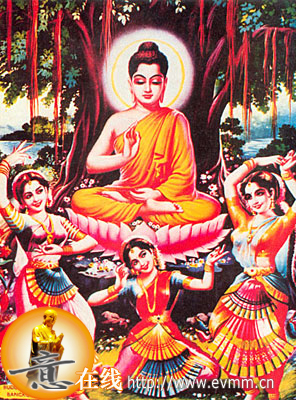 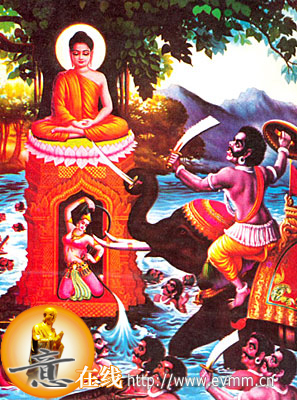 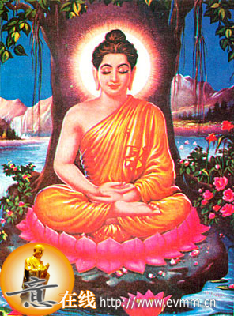 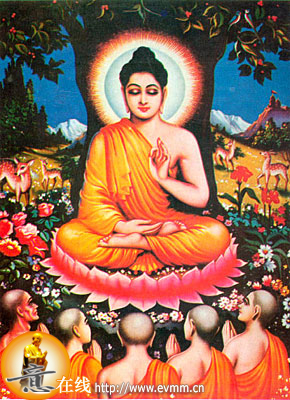 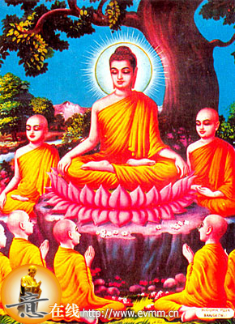 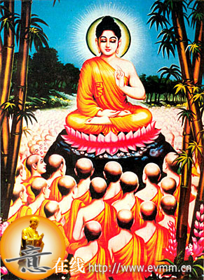 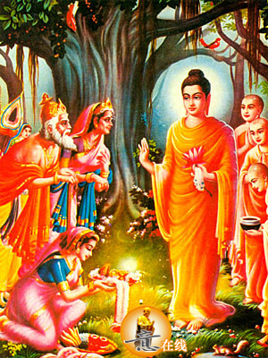 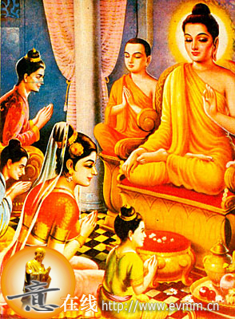 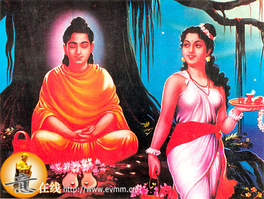 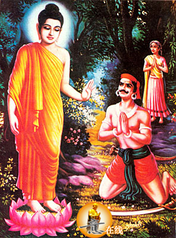 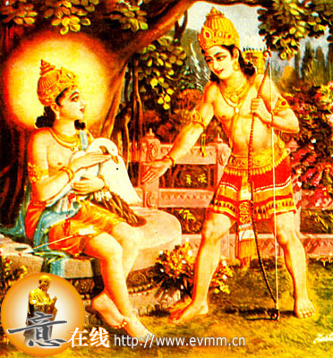 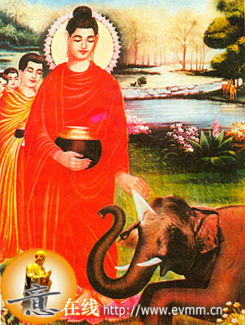 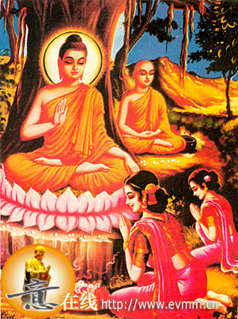 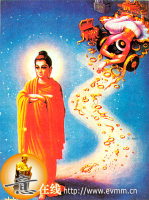 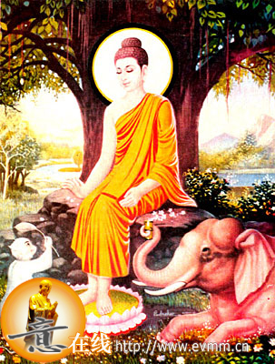 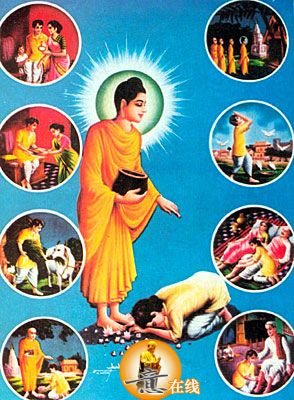 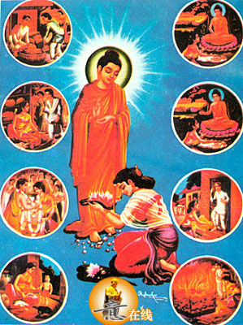 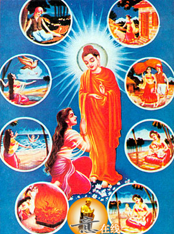 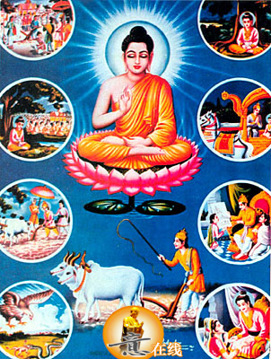 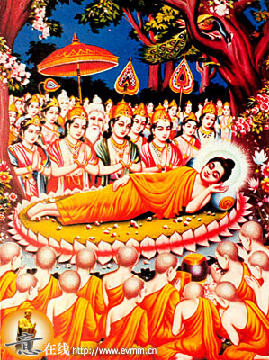 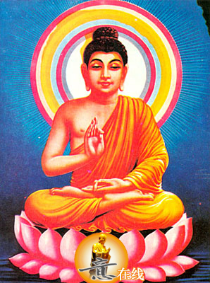 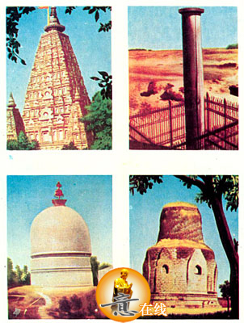
这类题材的画册，在我国属首次出版，我们希望读者在欣赏具有浓郁异国情调和宗教气氛的优美画面时，除增长一些有关佛教文化的知识外，对其中的玄妙因素应有所理解。
1、 佛祖释迦牟尼
释迦牟尼生于公元前565年，卒于公元前486年，大约与我国孔子同时代。他是古印度北部迦毗罗卫国（今尼泊尔境内）的王子，属刹帝利种姓。
据佛经记载，释迦牟尼在29岁时，有感于人世生、老、病、死等诸多苦恼，舍弃王族生活，出家修行。35岁时，他在菩提树下大彻大悟，逐创立佛教，随即在印度北部，中部恒河流域一带传教。年80在拘尸那迦城逝世。
他弟子很多，据传有五百人，其中著名者有十人。
2、 梦象受孕
一日，摩耶夫人在睡眠之际，梦见一头白象腾空而来，从右肋进入自己身体，她顿时觉得体安快乐如服甘露，反视自身如日月光照，醒来后她就去见净饭王，告诉他梦中之事。
净饭王立即召集大臣们询问王后之梦是何预兆，一名婆罗门占卜者回答说：“此梦甚佳！王后已怀孕，必生王子，这王子是个千古圣人，定能光显释迦族”净饭王听后，不胜欢喜。
摩耶夫人自梦白象受孕后，百病不染，身体十分健康〔《杂宝藏经·卷第二》、《大壮严论经·卷第十四》载，释迦牟尼前生曾为六牙白象。〕
3、 七步莲花
游历花园一周后，摩耶王后在一棵无尤树的绿荫下休息。她见这无尤树枝叶茂盛，柔软低垂，树上花果鲜丽，芬芳可爱，便举手攀摘花果，于是，王子就生了下来。
佛经上说，王子刚生下来就能说话，无人扶持即能行走。他身上发出光明，目光注射四方，举足行了七步，每步地上都出现一朵莲花。一时间，香风四散，花雨缤纷，仙乐和奏，诸天神人齐声赞颂。地上也自然涌出二泉，一冷一暖香冽清净。
净饭王得子后，喜悦非常，替他取名悉达多，就是说他生时即有许多奇异祥瑞的意思。
4、 姨母抚育
摩诃波闍波提贤淑仁慈，视王子悉达多为己出，十分钟爱。净饭王又令三十二名宫女协助抚育，八女抱持，八女洗浴，八女喂乳，八女带领玩耍。后来摩诃波闍波提与净饭王结婚，抚养王子更为尽心。
童年时代的悉达多王子，聪明伶俐，无出其右。他得到了姨母的小心将护，寒暖得时，饮食得时，饮食有节，身体异常健康，发育也非常迅速，就如同尼拘陀树，得种肥沃之土，正与日俱长。
5、 出游感苦
一日，他乘坐七宝轮车，从东门出游，看见一老人，伛偻曲背，手扶竹杖，举步艰难，有如蚁行。悉达多王子顿时有感于人生老苦，心生尤郁。
又一日，他从南门出游，见一病人，面色痿黄，形容枯槁，气喘呻吟，痛苦万状。悉达多王子怜悯病人，心自尤怖。
又一日从西门出游，见一死者，直挺僵卧，淤血流溢，臭积难闻，一家老小，号哭送之。悉达多王子又有感于心，惶恐苦闷。
又一日，悉达多王子出北门游玩，看见一出家之人，圆顶缁袍，相貌不俗，精神朗澈，威仪有度。那出家人告诉他修行解脱之道，王子听后，决计弃绝富贵享乐，刻意修行，以求解脱“老”、“病”、“死”苦。
6、 夜别妻儿
无奈之下，净饭王苦心孤诣，令人建造春夏秋三时都百花盛开的宫殿，增设诸般妙乐歌舞，以悦王子耳目，又令人警戒守护，不许稍离，想使王子去掉出家之念。
释迦牟尼丝毫不为五欲的享乐所打动。二月八日的半夜，月色明朗。他消消起身，凝望着熟睡的妻子耶轮陀罗和儿了罗睺罗，默默地向他们告别，然后便出了房间。他看见宫女们和守卫之人都呼呼熟睡，犹如木石，又生感慨。
7、 夜渡凡尘
王子跨上白马，取道北门逾墙而出，车匿也紧随其后。佛经上说，马初举步，大地震动，四大天王捧承马足，梵天帝释执幡引路。
王子出城之际，发下誓愿：“我若不了生死，终不还宫；我若不成佛道，终不还见父王；我若不尽恩爱之情，终不还见姨母妻儿。”
于是，悉达多王子与马夫车匿，一骑一步，乘着茫茫夜色，横渡清溪。到天明的时候，已达百里之外，走到了阿拔弥河边的深林，就是古跋伽仙人修苦行的地方。
8、 削发更衣
说罢，悉达多王子心中思忖；若不剃除须发乃非出家，即拔金刀，手自削发，且发誓言：“我今剃除须发，愿与一切众生断除烦恼习障。”这时来了一个猎人，身著袈裟，王子就以身上的华丽服饰相换，完全成了僧人形象。
马夫车匿见此情形，知不能挽回，只好牵马拜辞，寻路回宫。
9、 面壁静心
后来，释迦牟尼从师隐居山洞的阿罗逻迦罗摩和乌陀迦罗摩学习禅定。前者教他“追随沉思默想步骤”，就能得到“空寂王国”；后者对他宣读“既非心理作用也非心理作用的状态”。
于是释迦牟尼独处一山洞之中，盘膝趺坐，面壁静心，以求觉悟。春去秋来，终无所得，他明白了这不可能得到启迪，于是改变主意，决定去体验禁欲苦行，以求解脱。
10、 六年苦行
释迦牟尼独修苦行转眼已六年之久，他由最初每日食一麻一麦，渐渐至七日食一麻一麦以至于不饮不食起来。终于，他身体变得极度消瘦，有若枯木，手摩胸腹，能触背脊。
有一日，他忽然觉悟到：过度享受固然不易达到解脱大道，但是一味苦行，也是没有办法进趋大彻大悟的法门于是他决定重新进食，再参玄道。
11、 牧女献糜
释迦牟尼接受了供养，发愿说：“今食饮食，得充气力，以保留智慧年寿，为度众生。”遂即服食。
自此，释迦牟尼每日皆受牧女供献乳糜。一月之后，体力强健，已回复了昔日的壮实。他又去尼连河中沐浴洗衣，更觉得遍体清凉，光彩焕发。
12、 树下静悟
他重新调整修行的方法，端身正意在菩提树下结跏趺坐，静思默想。他的思维追忆着过去的经历，用大智慧观照宇宙人生的缘起本心，经过长时间的思索，进入一种“明白”或“醒悟”状态，达到“既不知道满意又不知道失望”的情况，似乎错误消失，智慧涌现，黑暗过去，光明到来。
佛经上说，释迦牟尼在菩提树下升座之后即圆成菩提道果祥光照跃天地，菩提道果是大乘佛教的出世圣果，凡一面自度以求成佛，一面普度众生脱离苦海的就称为菩萨。
13、 魔女炫媚
三魔女一名特利悉那（爱欲），一名罗蒂（乐欲），一名罗伽（贪欲）她们盛装严饰，罗杀临风，兰麝馥郁，凌波微步来到释迦牟尼身前，殷勤献媚，桃面嫣然。但释迦牟尼深心寂定，视而不见，犹如莲花出污泥而不染。
三个魔女不肯死心，竭尽种种妖娆之态，淫蝶之状，释迦牟尼训诫她们道：“你们形体虽好，心不端正，好比精美的琉璃瓶贮粪机，不自知耻，还敢来诳惑人吗？”又使法力，使魔女得见自身恶态，只见骷髅骨节，皮包筋缠，脓囊涕唾，丑状鄙秽，魔女看后，意念一转，羞耻惭愧，匍匐而遁。
14、 众魔败阵
释迦牟尼端坐金刚宝座之上，毫不恐惧惊动。魔王的毒雷毒箭，射到近处皆纷纷散落。他告诉魔王道：“我所以得成菩萨道是因为从三僧祗无央数劫以来，积集了无量福德智慧，圆满了六度万行。你来攻我，不是以卵击石，自取破灭吗？”
魔王不听劝告，一味蛮横，率众向前，释迦牟尼身放净光，魔众尽皆跌扑。天帝又请菩萨相助，菩萨使法，洪水滔滔汹涌而出，恶魔怪兽尽淹其中，狼狈败退。〔佛教认为，世界自成至坏叫一劫。〕
15、 大悟成佛
佛经上说，释迦牟尼成佛之时，大地震动诸天神人齐赞，地狱饿鬼畜生三道的许多苦厄，一时体息，天鼓齐鸣，发出妙音，天雨曼陀罗花，曼殊沙花，金花、银花、琉璃花、宝花、七宝莲花等。
至此，释迦牟尼已成就菩提道果，遂开始教收徒，传授他所证悟的宇宙真谛。
16、 鹿苑传教
在鹿野苑中，释迦牟尼向憍陈如等五人说法道；欲求大道应防止两个极端，一分享乐纵欲的生活，这是堕落，一为禁欲的苦行生活，这是痛苦。避开这两个极端，行于中道，能导致智慧觉悟，即可修“八正道”，脱出生死的苦海。五人听后，顶礼拜服。他又向五人说了生灭四谛之法，憍陈如等五人便皈依了释迦牟尼，同时被度为比丘，成为最早的信徒。
他们遵循释迦牟尼倡导的正道修行，不久就修成阿罗汉果。〔阿罗汉是小乘佛教的出世圣果，已了脱生死，不再来三界受生，故亦无灭。〕
17、 佛陀收徒
几年之间，释迦牟尼先后度化了波罗奈斯国的王子耶舍，专修事火外道并甚有名声的摩诃迦葉等多人，在摩揭陀国王舍城，国王频婆娑罗及其子阿闍世也先后皈依了佛陀，在舍卫城，拘萨罗国王也皈依了佛陀。释迦牟尼弟子甚多，相传有五百人，其中著名者有十人，即摩诃迦葉、舍利弗、目犍连、须菩提等十大弟子。
众弟子乞受戒法后，皆独行用心，勇猛精进，正心诚信，不曾放逸。并常去游四方，慈悲教化，普渡众生。
18、 佛陀说法
他所说之法，有佛教的“三皈五戒”。所谓三皈，即皈依佛、皈依法、皈依僧，佛、法、僧为佛门三宝。所谓五戒，即戒杀生，戒偷盗，戒淫邪，戒妄言，戒饮酒食肉。
释迦牟尼宣讲之法，主要有“四谛”，“八正道”，“十二因缘”其大略意思是说，世间存在的一切，都是种种痛苦的现象，即所谓“苦海无边”；造成痛苦的原因是爱欲和贪欲，国想脱离痛苦，必须根除欲望，遵循佛门的正确途径，证入常乐我净的涅槃境界。
另外，释迦牟尼还主张种姓平等，他说：“不应问生处，宜问其所行，微木能生火，卑贱生贤达。”〔释迦牟尼的思想，主要见于《阿含经》〕
19、 佛陀省父
净饭王一听得悉达多王子已成佛归来，不觉大喜，便扶病偕同王后率领群臣出城迎接。亲族百姓，也都焚香献花相迎。
释迦牟尼返回故国后，广宣佛法，许多亲族和百姓，也争相求度。迦毗罗卫国佛教大行，得道者如林。
三个月后，净饭王病逝。释迦牟尼为他举行了火葬之礼，超度他升天，并收拾遗骨，造塔供养。丧事完毕，仍率弟子离开故国。
20、 重见妻儿
图中跪迎佛祖者即罗喉罗、耶输陀罗。另两人为释迦牟尼的堂弟阿难及王宫理发师优婆离。
释迦牟尼向他们宣讲佛法，后来也先后度了他们出家。罗喉罗、阿难、优婆离皆修成阿罗汉果，一起成为佛陀的十大弟子。佛陀灭度后，阿难由于听法多，记忆力强，遂诵出佛陀所讲的人生宇宙的实相真理，优婆离亦诵出佛陀为弟子们制定的行持法规，记录下来后，就是佛氏三藏书中的经藏和律藏。
耶输陀罗后来与释迦牟尼姨母摩诃波闍波提一起皈依佛门后，成为最早的比丘尼（尼僧）。
21、 採花献佛
村中有一贫穷少女，为大家作佣人，她善良贤淑，敬信三宝。当时遥见佛祖，心怀喜悦，苦于无力，不克供养，即去荒野，採集香花鲜果，供献佛陀。
释迦牟尼知道她的心意，面露微笑，发大慈悲心，对她说法，并道：“一切众生，皆当随时随处出至诚心，广植善因。勿以贫贱为尤，勿轻视小的施舍，以为无福。
少女闻法后，心解佛慧，矢志随佛以离尘也诸浊苦，勤苦修身以求解脱。释迦牟尼度她出家，号为妙花。
22、佛化无恼
无恼被惑，若醉若狂，逢人便杀，如狮搏兔，剑到指脱，国内之人，奔走藏匿，不敢外出，释迦牟尼知道后，急忙赶去解难。
这时已近中午，无恼捡点手指，已得九十九枚，遍寻人不得，恐错过时间，心中焦躁。恰逢无恼母亲，已做好午饭，怪子不归，出门来寻。无恼心智模糊；欲杀其母，以凑指数。
释迦牟尼赶到，遮到前面。无恼舍母追佛祖，谁知力竭也追赶不上。佛祖教化他道：“汝从邪师，伤生害命，造无边罪，丰能妄想成道？”无恼蓦然醒悟，掷刀道傍，五体投地，愧悔不已，后亦随佛出家，永离邪纲。
23、 佛度猎人
释迦牟尼心中，众生平等，人类畜生，本无差别，某日见一猎人，射猎飞雁，一雁中矢，哀鸣堕地佛祖心中慈悲，化作俗人，抱护伤雁劝告猎人道：“大雁生长川泽湖泊之间，与人无争，有什么罪恶，要受到你诛戮呢？要知道，人若杀生害命以自济活，乃是罪孽深重的业障，若不自拔，报应将如影随形，就在目前。”
猎人听了佛祖之言，感悟悔过，忙取药给雁治伤包扎，并放之于山林，佛祖又点化他道：“慈悲为本不伤众生，博爱济众福常随身。”猎人即皈依了佛陀，愿受佛门五戒，以脱苦厄。
24、 驯服醉象
他们又假意请佛陀入城，暗中在道旁埋伏一头醉象，欲趁机杀踏，释迦牟尼带领五百弟子，往城里而来。百姓恐佛被醉象伤害站在城头，请佛陀不要过去，醉象却昂头甩动长鼻，直奔佛陀，释迦牟尼毫不畏惧，迎了上去，伸开五指似雄狮怒吼，醉象伏地受法，从此驯服，不敢害人。
后来，阿闍世王觉悟，归佛忏悔。提婆达多党徒离散，众叛亲离，成为孤家寡人，无处容身，气愤而死。
25、 收比丘尼
他说：“我今分众为四众，在家二众。凡是信奉佛教，愿意披剃出家的，男的名为比丘，女的名为比丘尼，这是出家的二众。凡是信奉佛教，不愿出家的，男的名为优婆塞，女的名为优婆夷，这是在家的二众。”
本图即为释迦牟尼收女性弟子的情况，傍侧僧人为阿难。
早期的女性佛教徒都乐善好施，忠诚于佛法，并能传教布道。她们为佛教的传播和发展作出了较大贡献。
26、 不蓄金银
释迦牟尼强调人生皆苦，贪爱皆是苦因，钱财是人所贪爱之物，变化无常，终将消失。欲解脱人生痛苦，就应舍去贪爱之物，消除贪欲之念，这才可能达到没有痛苦的涅槃境界。
图中倒卧地上之人，穿金戴银，广积财宝，贪得无厌，但是财宝并没有给他带来幸福，贪欲只会使他更为痛苦而无片刻的心理安宁。因此，只有虔信佛祖，崇敬三宝，才能登上“佛筏”。从无知，贪欲而痛苦不堪的此岸渡过生命的长河，到达智慧的彼岸。
27、 象猴得渡
猕猴答道：“我原居住山麓林中，有亲眷数百，每日攀树摘果自在生活。但王子游猎射杀我辈，伙伴尽皆丧身，我幸攀树枝荡过溪流而免。今剩一身，求佛祖救度。
大象也说：“我所居处附近有一恶人，对我象群十分凶狠，陷阱捕捉，刀箭杀伤，我为避灭祸逃匿于此，幸遇佛祖，祈求庇护。
释迦牟尼听后，对象猴说道：“伤生害命是佛门第一大戒，滥施强暴的人终将受惩。你们欲要解脱苦厄，须精修磨炼。”说罢遂与象猴同饮甘泉，分食蜜果。象猴大喜，叩拜佛祖，投入尼连禅河，溺水而死，待转世为人，再出家修行，以求解脱。
今河畔林中，佛度象猴处，仍有遗迹可寻。
28、 普渡众生
② 国内有一青年名毗闍先，心地善良。当时久旱无雨，他就到旷野撒谷物喂鸟，以此向天祈雨。
③ 毗闍先父母年迈多病，他尽心奉养，非常孝顺。
④ 毗闍先妻子贤惠，幼子乖巧，家庭和睦幸福。
⑤ 他好学不倦，略有积蓄，就请妻子购回书籍学习，求取真知。
⑥ 毗闍先勤劳仁厚，常于夜半起来为饲养的性畜加添饲料。
⑦ 持之以恒不失善行的毗闍先为佛陀赏识，就吩咐摩诃迦枼前往渡化他。
毗闍先悉听了迦枼尊者的种种教诲，明白了许多真谛，遂皈依了佛陀，后来成为著名的在家弟子。
29、 佛渡众生
② 她摆设一个小摊，出售水果蔬菜等杂货。由于买卖公平，生意还不错。
③ 后来，她与同村一个青年经为夫妇，婚后感情融洽，丈夫料理生意，她在家中操持家务。
④ 不久，她生了一个可爱的孩子，家庭生活更增添了乐趣。
⑤ 可异好景不长，丈夫因病去世后，幼子亦即患病身亡，她抱着死去的孩子来到正在菩提树下坐禅的佛陀前祈求超度。
⑥ 佛陀对她讲道：娑婆世界的一切，本性都是“苦”。人生皆苦，生苦、老苦、病苦、死苦、怨苦、别离苦。生活在尘世上，就是生活在“苦”中。
⑦ 优那陀耶回村后，迫于生计，便求助粼里时逢瘟疫流行，病死之人甚多，人人自顾不及，无力相助。
⑧ 她深感丧夫失子以及人世生活之苦，忆及佛陀的教诲，决心脱离苦海。优那陀耶皈依了佛门，佛陀应允收她为徒。后来，她精心修行，终成正果。
30、 普渡众生
② 每逢丈夫在田间忙碌时，波摩忙完家务，总要到田里去帮助他。他们还有两个天真可爱的孩子，家庭生活幸福美满。
③ 有一天，丈夫去地里后，波摩在海边的树下给小儿子喂乳，大儿子在海滩上嬉戏。她轻拍小儿子，幸福充满她的心田。
④ 但是，人世间的幸福不会是长久的，波摩哪里知道，当她喂完幼儿，把他放在树下的时候，灾难已开始降临到她身上了——
⑤ 正在田地收割庄稼的丈夫，被窜出的一条毒蛇咬了一口，很快就毒发身亡……
⑥ 一只凶猛的兀鹫，忽然从天而降，叨起树下的幼儿，刹时便无影无踪……
⑦ 大海掀起了汹涌的浪涛，卷起了正在海滩的大儿子……
⑧
短短的一天之内，波摩便失去了丈夫和两个娇儿。她悲痛欲绝，望着正在焚烧丈夫遗体的火焰，深感世间之苦。家破人亡的波摩皈依了佛陀，虔诚地祈求解脱。在佛陀的点化下，她潜心修行，勇猛精进，后来成为有名的佛门女弟子。
31、 佛说前生
以前有一国王叫勒那跋弥，他秉性善良，体察民情，得到百性爱戴，由于无子，他虔诚祈祷天帝，不久王后就给他生下了一个儿子，人称善事太子，太子少时即十分听慧，熟读经书，深明其义理。
他常端坐菩提树下静思，或听僧众诵经讲道，看见过他的人，都说他相貌堂堂，酷似天帝。
一日，他途经郊外，见农夫犁田，便下车试之，随即看见了这样一件事——耕地之时，地中的许多虫蚁被驱出：一只蛤蟆趁机饱餐虫蚁；尔后一条蛇又吞食了蛤蟆；接着一只大雕飞来啄食了那条蛇。
太子看后，感慨不已，心尤不乐。他一面随国师遍访名山，求学寻道，一面劝告父母多做善事，更加体恤民间疾苦。后来，当善事太子到了绀琉璃山时，众多天女手持珠宝，奉献于他。佛陀最后说道：那时的善事太子，就是现在的我啊！勒那跋弥国王就是现在的净饭王，那时的王后就是我母亲摩诃波耶。
32、 双林灭度
佛陀命阿难在双林中设席铺床，然后头北面西，右胁着席，叠足安卧，中夜之时，他对弟子说完最后的遗教，便默然无声，安祥圆寂。
释迦牟尼双林灭度后，他的出家弟子和世俗弟子们无不泫然流涕。皆纷纷从四面八方赶来，瞻仰佛的遗容，缅怀佛的功德。七日后，由大弟子摩诃迦叶主持了葬礼，在拘尸那伽城天冠寺举火焚化。薪尽火灭，摩诃迦叶取出舍利（高僧遗体焚烧后留下的珠状物），分为分份，用净器装盛，分送八国造塔供养。
33、 佛光普照
自他灭度后，佛教弟子多次聚集，追述他所教的学理，编集成卷帙浩繁的大藏经。
他的生平事迹，也随着佛教在亚洲地区的传播而流传开来，并逐渐被后人赋予神秘的色彩，他本人也被神化为法力无边的佛祖。
我国汉族地区人们习俗上称他为如来佛，如来，是佛的十种称号之一，“如”即“真如”，指佛所说的“绝对真理”，循此真如达到佛的觉悟。“如来者，乘如宝道来成正觉，故曰如来”。
大乘佛教认为有许多佛，故如来并不一家专指释迦牟尼。
佛教圣迹遍及南亚，东南亚与东亚，本图四幅照片为释迦牟尼诞生，悟道，初次传教，涅槃的四座圣塔。
上左：生处塔 在迦毗罗卫国，（今尼伯尔南部地区）林微园中。
上右：成道塔 在印度摩揭陀国（今印度比哈尔邦境内）善胜道场元吉树下，据传，佛陀就是在此地悟道的
下左：转法轮塔 在印度波罗奈国（今瓦腊纳西城地区）古仙人住处鹿野苑中，据说，佛陀于此地第一次向阿若憍陈如等五人说法，并使他们成为第一批佛教信徒
下右：涅槃塔。在拘夷那国（约今印度联合邦迦夏城地区）力士生地秀林双树间。据传，佛祖就在此处逝世圆寂。
Source: http://hi.baidu.com/fodizi/blog/item/87a9ad02eaed830d4bfb51fa.html